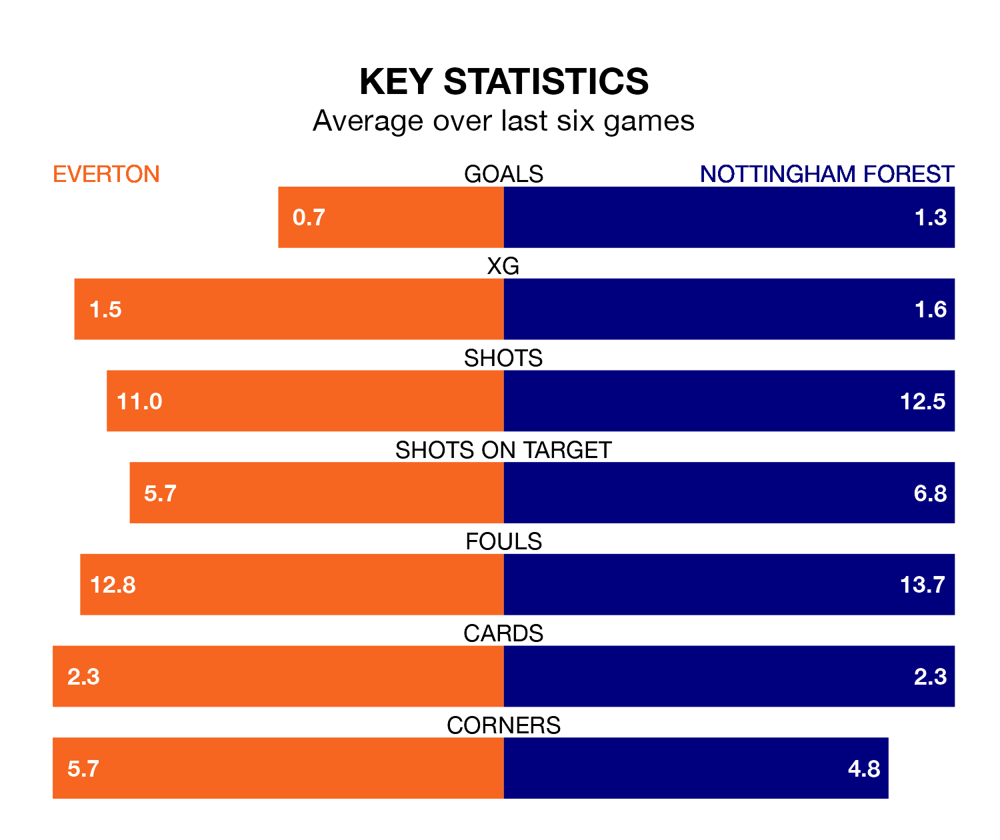

Everton are on a poor run ahead of hosting Nottingham Forest at Goodison Park on Sunday, with just four points collected from their last six games.
The Toffees have picked up one win and one draw in their last six Premier League games, and face a Tricky Trees side whose last six games have brought one win and three draws.
In Jordan Pickford, Everton can rely on one of the league's safest pair of hands. He has kept nine clean sheets in his 32 appearances this season, and only one other 'keeper – Arsenal's David Raya – has been able to prevent the opposition scoring on more occasions in the Premier League.
In Forest's net, Matt Turner has two clean sheets in 17 games. He has conceded a goal every 59 minutes, 20% more often than the 69 minutes between goals for Pickford.
The Tricky Trees are 17th in the table after 33 games, of which they have won seven and drawn nine, earning 30 points.
The Toffees are three places ahead of the visitors in 14th, with nine wins and eight draws putting them on 35 points.
With 32 goals in 32 games so far this season, the home team are the league's second-lowest scorers with 1.0 goals per game. But they are conceding fewer than average too, letting in 48 goals at a rate of 1.5 per game.
Forest are also below average scorers, with 1.3 goals per game, compared to a league average of 1.6. They have conceded 1.8 goals per game.
In the last three years, Everton and Forest have played each other on three occasions. Everton won one of them and they drew the other.
Their last meeting was on December 2, when Everton won 1-0 away.
Everton's last match was on Monday, a 6-0 loss against Chelsea.
Forest drew 2-2 with Wolverhampton Wanderers last time out, on April 13, with Danilo Oliveira and Morgan Gibbs-White on the scoresheet.
Sunday's match will be refereed by Chris Kavanagh, who has taken charge of 17 Premier League games so far this season, issuing two red cards and booking 70 players. He has awarded seven penalties.
The last Forest game Kavanagh refereed was the 1-1 draw at home against Crystal Palace on March 30. He is yet to oversee a match featuring Everton this season.
Updated: 15:40 (UTC), 18/04/24